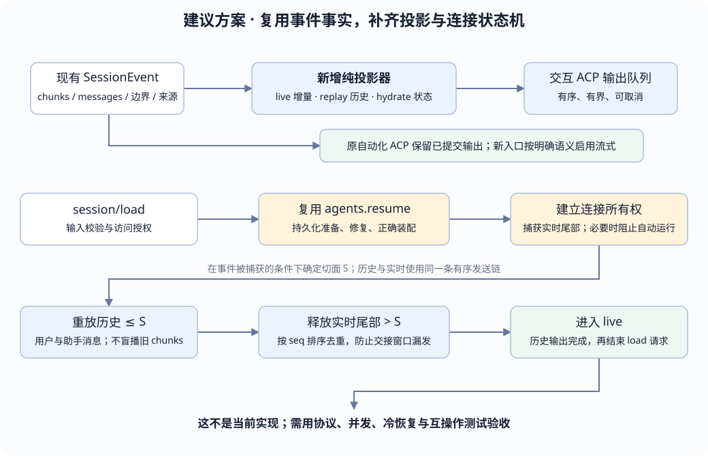

← 课程首页 · 两家 ACP 对照 · Event Log 总览
DESIGN PROPOSAL · DEEPSEEK HARNESS ACP
让 ACP 实时输出、加载旧会话，
需要改哪些层？
主要补在 ACP 的输出投影和连接状态机，复用现有事件与持久化恢复。难点在于流式失败语义、完整消息去重、恢复时的启动行为，以及历史和实时交接。
核对日期：2026-10-16。现有实现以子模块提交 99f6f02fecdb7dff40c3fbc9470f5907c29f74ca 为依据，ACP 包依赖 SDK 0.25.1。新文件名、配置名、状态名和策略均为建议；协议引用另标明当前官方 v1 文档，不能假定所有新字段已在该 SDK 中可用。
六层改动表：哪些直接改，哪些先复用？
| 职责 | 现有位置 | 建议改动 | 范围 |
|---|---|---|---|
| ① 产品与协议入口 | packages/acp/acp；packages/examples/acp-demo 与实际配置叶子。 | 保留自动化语义；增加独立交互入口或明确可选模式。加载功能完整可用后才公布 loadSession；明确历史、未提交增量和权限策略。 | 必改；新入口与模式二选一，本页推荐前者。 |
| ② 事件 → ACP 纯投影 | acp/src/index.ts 的 session/event；content.ts；SessionEvent / StreamChunk。 | 提取有状态纯折叠，按 live / replay / hydrate 路径转换；追踪尝试、block、发送范围和最终消息来源，防重复。 | 必改投影；优先复用事件，不先改日志格式或 Agent Loop 主算法。 |
| ③ 持久恢复与 Agent 装配 | AgentStore.resume → AgentLoop.resume → SessionPersistence.prepare；恢复修复逻辑。 | 复用读取、校验和修复；补 ACP 的访问校验、原 preset / 工具 / 权限装配。若 load 要求先等待用户输入，增加明确的恢复启动闸门。 | 多数复用；启动闸门可能需要扩展 factory API，不能在 resume 返回后才阻止。 |
| ④ 连接与生命周期状态机 | SessionRecord、sessions Map、outputTail、prompt/cancel、quiesce。 | 新增 loading / replaying / live / closing 状态，预留身份，缓冲切面后的事件；有界顺序发送，处理中途断线、回滚和精确所有权。 | 必改；只是多写一个 loadSession handler 不够。 |
| ⑤ 消费方 | subagent/subagent-acp/src/run.ts；IDE / 外部 ACP Client。 | 交互客户端接受实时暂态；自动化客户端继续使用已提交模式。若客户端也要加载会话，保存远端 ID、检查能力并去重历史。 | 仅实现服务端时可不扩子 Agent 客户端；端到端恢复则必须做。 |
| ⑥ 测试、示例与文档 | acp/tests；acp-demo；test-support/acp-snapshot；examples/acp-agent；README / JSDoc。 | 覆盖真实 SDK wire、冷重启、重试、断线、历史实时竞态；保留旧自动化快照，新增交互与 load 场景。 | 必改；先检查现有 snapshot harness 是否需要增加生命周期调用支持。 |
ACP 现有桥接 · ResumeAgentOptions / AgentStore.resume · factory 的准备、发布和启动 · Persistence 接口
推荐架构：同一事件事实，分开输出策略

第一步可在新交互适配器里放一个纯 helper，例如建议路径 packages/acp/acp-interactive/src/projection.ts；它不是现有文件。先把事件选择和状态计算与 stdin/stdout、图片读取、持久化 I/O 分开，不必一开始新建服务 seam。
// 建议接口伪代码；不是仓库已经导出的 API。
// state：会话投影状态；event：已存在的日志事件；phase：本次处理用途。
project(state, event, phase: "live" | "replay" | "hydrate")
→ { nextState, effects }
// effects 表达要交付的文本、图片引用、工具展示等意图。
// sender 按序执行图片读取与 ACP SDK 发送，不在纯投影里做异步 I/O。
sender.enqueue(effects)live 把当前事件变成增量；replay 生成历史显示；hydrate 只恢复投影状态，不发旧 token。三者共享事件解释规则，但不应机械地产生同一组输出。原 dsh-acp 与新交互插件不能同时争用同一进程的 stdin/stdout，由部署组合选择一个入口。
实时输出：不仅是把 text-delta 转发出去
| 现有事件 | 建议的交互 ACP 处理 | 状态与去重 |
|---|---|---|
| assistant/chunk：text-delta | 把 delta 文本映射 agent_message_chunk。 | 按 session、turn、step、尝试代次、block index 追踪。尝试代次是投影状态，不假装当前事件自带 attemptId。 |
| block-start / block-end / finish | 更新尝试和块生命周期；block-end 的完整内容用于核对。 | 不能将 block-end 的全文再发送一遍；最终 finish 与新尝试的开始要分开。 |
| assistant/message | 核对已发送内容，只补从未流出的内容块；图片仍走附件读取与校验。 | 用 sourceEventSeqs 关联最终消息的来源 chunks。若最终文本不匹配已流出的前缀，不可盲目补发整段。 |
| reasoning-delta / tool-call-delta | 按明确的产品选择加入 thought 或工具展示；并非“实时正文 + load”第一版必须全做。 | 工具按 callId 关联，参数分片不可当完整 JSON 执行。不要把内部所有 reasoning 默认暴露。 |
| tool/call / tool/result | 若交互入口承诺工具轨迹，则投影成开始 / 终态。 | 流式参数阶段已创建的卡片只更新，不再重新开始；权限请求仍走独立控制面。 |
| llm/retry / llm/retry-started | 辅助解释尝试切换和等待。 | 这些由重试插件产生。不能假设所有扩展点的重试都必然带这两个事件；要检查实际路径和缺失边界。 |
当前 Agent Loop 已在消费每个模型分片时 append assistant/chunk，并在形成完整消息后记录 sourceEventSeqs，因此“实时正文”通常不需要另建 LLM token 总线。直接订阅现有事件可以保留可追溯来源；是否需要补日志事实，要由重试和生命周期测试暴露的具体缺口决定。
同一数据不能发送两遍：假设 live 已发“你好”，完整消息是“你好”。正确结果仍是“你好”，不能在 assistant/message 到来时再拼成“你好你好”。按 block 累计前缀只是工具，最终还要核对来源和内容，不能只用“该 step 发过字”这一布尔值压掉剩余消息。
图片不按 base64 字符分片；完整引用就绪后验证并发送。所有文本 / 图片意图进入同一有序队列，避免后面的文字越过前面的异步图片读取；队列需要容量与过载策略，不得靠无限增长的 Promise 链承诺实时性。session/event 观察者不应阻塞 Agent；队列超限可按明确策略取消该连接自有工作并失败，不可静默丢字后仍声称输出完整。
失败与重试：先定义客户端已经看见的半句怎么办
尝试 A：输出“答案是 4” → 失败，没有完整 assistant/message
尝试 B：重试，输出“答案是 5” → 提交完整 assistant/message
现有自动化 ACP：只看到“答案是 5”
盲目转发所有 chunks：可能看到“答案是 4答案是 5”
所以：实时输出不能继续承诺现有的“失败尝试不会泄漏”。推荐第一版交互策略：已经发出可见正文后，不自动重试该次请求，使用现有 agent/request-error 等扩展点落实这项策略；失败以本次 prompt 的错误 / 取消结束，部分文字保留为未完成显示。尚未发出正文的失败可以按明确策略重试。实现时要核对监听器优先级与所有重试来源，不能只在 ACP 发送端停止监听。
如果产品必须在输出后继续自动重试，就需要客户端能区分尝试、替换或撤销旧段落。当前基础 agent_message_chunk 只是追加文本，不能凭空当成撤回协议。可用的标准消息身份 / 更新能力或命名空间扩展，必须按部署 SDK 与客户端实际支持协商；无支持时不要启用这类重试语义。
另一个可选方案是继续缓冲到完整消息再发送，它保留当前保证，但不再是逐 token 的低延迟输出。不要把三种选择混在同一个未命名的默认模式里。
agent/request-error 扩展点与失败后 continue · 当前重试插件 · ACP v1 的更新和 prompt 生命周期
session/load：补连接状态机，而不是复制一份旧 events
建议新状态为 loading → replaying → live → closing。只有加载所需持久化、装配和回放路径已配置并可工作，initialize 才返回 agentCapabilities.loadSession: true。不要因为模型支持流式就连带宣称支持历史加载。
- 预留身份：在第一次 await 前保留 sessionId 的加载槽位，拒绝重复 load、重叠 prompt 和其他连接的抢占。保留精确 handle 所有权；不能只按相同字符串 ID 接管别人的 Agent。
- 验证目标：检查当前部署允许读取的会话、持久化 Header、cwd 和 preset；新入口仍没有通用账号体系时，把可加载范围限制到明确部署根与连接许可范围。保持对非空 MCP / 附加目录的显式处理，不因 load 悄悄开放新能力。
- 准备与恢复：复用 SessionPersistence.prepare 与 agents.resume。保留原会话 ID 和 Header，交给现有修复逻辑补齐中断工具 / Step / Turn，不自己拼造成功结果。
- 装配与启动：恢复正确的工具、提示词、权限和模型策略。agents.resume 会走 factory 的发布与启动路径；不能认为返回 handle 前一定没有事件或自动工作。利用现有 setup 预先挂载 scoped 观察；若需禁止恢复后自动驱动 Inbox / Goal / session-start 生产者，必须补显式启动闸门或两阶段 factory 能力。
- 切出历史：在已经可靠捕获新事件的条件下，同步取得回放切面 S。历史 ≤ S 进入 replay，之后事件 > S 先缓冲；恢复种子不会自动重发 session/event，所以必须主动读取历史。
- 有序交接：回放经统一队列排空，再按 seq 释放缓冲尾部，使用最后观察 seq 防重。加载成功前不接新 prompt；出现捕获缺口要重建快照或失败，不能跳过缺口继续。
- 完成 / 回滚：按所协商的协议完成历史通知后返回 load 响应，进入 live。加载中断、图片读取失败、连接关闭时，取消加载并释放自己新恢复的 handle；不删除耐久日志、不释放别的前端的会话。
// 设计状态示意，不是当前 SessionRecord 定义。
SessionRecord = {
phase: "loading" | "replaying" | "live" | "closing",
ownedHandle, // 精确拥有的恢复 handle；加载期间可能尚未取得
replayThroughSeq, // 本次历史切面 S
lastObservedSeq, // 捕获进度，防漏和防重复；不是远端接收确认
pendingLiveTail, // S 之后的有界尾部
projectionState, // 尝试、block、来源与已输出范围
outputQueue, // 串行且有界的交付
loadAbort, // 连接释放与取消能够终止加载
}“setup 是发布前装配点”不等于“已有暂停启动 API”。当前 setup 接收 scoped Context，不是任意未发布 Agent 句柄；可行实现应明确如何在发布时绑定精确 Session、如何拦住自动生产者。若做不到，不应拿 resume 后再 cancel 充当启动闸门，副作用可能已经开始。
当前 notify 会捕获 transport 写失败并仅记警告。新的 load 不能把“失败已被吞掉”当成回放成功：发送层应将失败交给连接状态机，停止后续入队并使加载失败 / 关闭，而不是推进完成状态。即使 SDK 写入成功，也只是交给传输，不是客户端耐久接收确认。
ACP 官方 v1 session/load 约定在历史通知完成后才响应；session/resume 是另一项不回放历史的能力。此方案不同时承诺它。实际字段、通知顺序和错误编码必须使用选定 SDK 的类型与互操作测试确认，不能直接照抄更新版本文档的全部字段。
恢复 options、setup 与 disposer 所有权 · prepare / setupAndPublish / resumeWith · 种子、事件发布与 Session 数据 · ACP v1 session/load 与 session/resume
历史回放取什么：不能盲播所有 chunks，也不能只用模型 Surface
| 材料 | 建议回放规则 | 原因 |
|---|---|---|
| 已追加的用户 / 助手消息 | 按人类 transcript 规则输出 user_message_chunk / agent_message_chunk；区分真实用户输入与内部注入内容。 | 完整历史包含用户输入；不能沿用“实时输入不回显”就把 load 的用户消息也丢掉。 |
| 原始 assistant/chunk | hydrate 投影状态；正常历史用已提交消息，不重放废弃尝试的半句和原始 token 节奏。 | 历史不应把失败尝试串进最终回答。没有完整消息的尾部可用明确支持的中断展示表示，不能伪造成成功回答。 |
| Surface replacement / 压缩 | 人类历史依据 append-origin 内容与明确的压缩展示策略；模型上下文继续由 Surface 决定。 | 不能用 deriveMessages() 直接当 transcript，否则历史会被压缩摘要遮蔽；也不能把模型专用替换副本当普通新回复重复显示。 |
| 工具与计划 | 若产品提供这些 live 展示，回放也实现同样的业务解释；权限决定可以展示结果，不能重发旧 request_permission 当作未决审批。 | 回放是展示，不执行工具，不重新批准旧调用。省略某类历史必须符合明确的产品与协议范围。 |
| 恢复合成的结果与 closer | 保留 interrupted / unknown 的事实，展示为中断，而非重新执行或补成成功。 | TOOL_OUTCOME_UNKNOWN 表示副作用未知，不能默认重试非幂等写入。 |
| 图片附件 | 重用历史引用，读取并验证后交付；缺失时按约定失败或可协商显示错误。 | Event Log 中保存引用不代表所有附件字节永远可用。 |
历史切面 S、最后观察 seq、磁盘已 flush seq 和客户端已接收，是四种进度。内存发送游标不等于远端已耐久保存；标准 load 的全量回放也不等于带确认游标的可靠增量续传。第一版可以采用重新加载全量历史、由客户端重建 transcript，明确不保证 exactly-once。
append-origin 与模型 Surface 的区分 · TOOL_NOT_STARTED / TOOL_OUTCOME_UNKNOWN 与 closer · 现有耐久检查点
客户端要不要一起改？取决于你要交付哪一端
只新增一个供 IDE 使用的交互 Server，现有 subagent-acp 可以继续连接原自动化入口，无需跟着消费工具展示。若要求“父 Harness 经 ACP 连接到这个交互入口，重启后继续同一子会话”，就要同时改客户端：
- 保留远端 session ID 和连接所需的授权信息，不能复用父端新生成的运行 ID 代替。当前每次 newSession 的策略需要显式改成 new / load 选择。
- initialize 后检查 loadSession，再决定 load；不要遇到加载错误就无提示地建一个失忆的新会话。
- 把历史回放与本次回答分开。当前 AssistantOutputFold 直接拼接正文，若照常消费 load replay，会把旧答案再次拼进这次 SubagentResult。
- 接受实时模式后，定义失败 / 取消时部分文本的返回规则；若仍要求只交付已提交最终结果，应继续使用自动化入口或另行定义可验证的提交信号。
“实时 UI 很丰富”与“自动化工具结果干净”是两种消费需求。不能只在服务端加 chunk 转发，再指望所有现有 ACP 客户端自动理解暂态、历史和提交。
建议交付顺序：先 load，再逐 token，工具展示最后独立扩展
| 阶段 | 可验收结果 | 没有顺带承诺的内容 |
|---|---|---|
| 1．隔离交互入口与纯投影 | 原自动化快照保持原行为；交互入口先按完整消息输出。建立明确的人类 transcript 与状态模型。 | 暂不宣布 loadSession，不以新配置名字冒充已实现能力。 |
| 2．完整实现 session/load | 验证会话范围、正确装配、启动闸门、历史切面与实时交接；冷重启后加载历史，再提交新 prompt。 | 不复活旧网络流或工具进程，不自动重跑未知副作用。 |
| 3．显式启用实时正文 | text-delta 低延迟输出，完整消息不重复；实现输出后失败策略、队列边界、取消排空。 | 不再承诺失败尝试无部分输出；不假定基础协议能撤回文字。 |
| 4．按需扩展 thought / tools / plan | 分别定义 live、历史回放、权限和错误展示，并做客户端互操作验证。 | 支持 streaming + load 不自动等于全部 IDE、文件系统、终端或 MCP 能力。 |
| 5．可选的子 Agent 原生重连 | 客户端保留远端身份、load 前检查能力、隔离历史与新结果。 | 不把每次新进程的现有 provider 自动变成可恢复 provider。 |
通常不需要重写 LLM Adapter、Event Log 编码、JSONL / SQLite 格式或模型消息投影。需要动核心时，应聚焦“恢复后何时允许驱动”和确实缺失的耐久事实，并遵循现有扩展点，而不是把 ACP 分支塞进模型循环。新适配包应声明实际使用的 persistence / attachment 等依赖，配置叶子与 resolver manifest 也要接入；创建一个未被组合加载的源码文件不算交付。
稳定验收矩阵：这些分支过了，才算支持
这是未来实现的验收要求。本次只核对源码与协议、制作和验证静态页面，没有实现或运行下面这些 Harness 功能测试。
| 可控输入 / 故障 | 必须观察到 |
|---|---|
| text-delta“你”“好” + 完整 message“你好” | live 正文恰好“你好”；历史重载后也只有一份完整消息。 |
| 同 step 中分片输出后失败并尝试重试 | 按所选策略停止或明确区分尝试；不能无提示拼成两个互相矛盾的答案。 |
| 最终 message 与流式前缀不一致 | 按策略报错或使用协商的替换；不能盲目补整段造成重复。 |
| 文本 / 慢图片读取 / 文本 | 有序交付；prompt 不先于输出排空完成，队列容量可验证。 |
| load 切面 S 附近同时追加 S+1、S+2 | 历史与尾部无缺口、无双发；回复顺序满足选定 SDK 的 session/load 约定。 |
| 恢复触发 pending Inbox、Goal 或 session-start 插件 | 启动闸门策略有效；若约定先等待新输入，load 不得偷偷开始工具副作用。 |
| 同 ID 并发 load、其他连接已占用、cwd 不符 | 明确拒绝或按既定所有权协议处理，不接管或泄露其他会话。 |
| 加载一半断线 / 取消 / 图片损坏 | 新恢复的资源回收，迟到事件不再发送，耐久日志保留，无关 Agent 不受影响。 |
| 日志含压缩、替换、失败 chunks 和未知结果修复 | 重放人类历史，不漏原对话、不重复摘要、不重放审批或执行工具。 |
| 两个独立进程：flush → 退出 → 新进程 load → 新 prompt | 恢复真实持久前缀，而非测试内存缓存；用户 / 助手历史与后续模型请求均正确。 |
| 自动化客户端连接旧入口；交互客户端连接新入口 | 旧结果语义保持，新客户端识别流式失败和历史。子 Agent load 的旧答案不混进本次结果。 |
使用现有 acp/tests 的真实 SDK 内存传输和可控模型脚本扩展协议测试；冷恢复必须增加跨进程验证，不能只在同一 Context 里新建对象。将必要的 load 调用、历史边界和输出比较补进 acp-snapshot harness，再通过可运行示例保留快照。若实现改动触及公开 Session 事件或生命周期，还需同步检查 TypeScript / Python SDK 投影。
可控模型与真实 SDK 测试传输 · 现有输出 / 取消测试 · 现有资源释放测试 · Snapshot harness